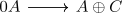
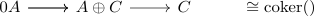

homology functor preserves cokernels for split exact sequences
Proposition
Let $\mathcal{A}$ be an abelian category and $\mathrm{Ch_*}(\mathcal{A})$ be the category of chain complexes. Suppose

is an exact sequence, which admits a split exact sequence

Then the homology functor $H_n$ preserves cokernels, i.e.
\begin{align*}
H_n(\mathrm{coker}(A \rightarrow A \oplus C)) \cong \mathrm{coker}(H_n(A \rightarrow A \oplus C))
\end{align*}
see:
Proof
Follows as
\begin{align*}
\mathrm{coker}(H_n(A \rightarrow A \oplus C)) =& \mathrm{coker}(\mathrm{ker}(A_n)/\mathrm{im}(A_n) \rightarrow \mathrm{ker}(A_n \oplus C_n)/\mathrm{im}(A_n \oplus C_n)) \\
\cong& \mathrm{coker}( \mathrm{ker}(A_n)/ \mathrm{im}(A_n) \rightarrow (\mathrm{ker}(A_n) \oplus \mathrm{ker}(C_n))/(\mathrm{im}(A_n) \oplus \mathrm{im}(C_n))) \\
\cong& \mathrm{coker}( \mathrm{ker}(A_n)/ \mathrm{im}(A_n) \rightarrow (\mathrm{ker}(A_n)/\mathrm{im}(A_n)) \oplus \mathrm{ker}(C_n))/\mathrm{im}(C_n)) \\
\cong& \mathrm{ker}(C_n)/\mathrm{im}(C_n)
\end{align*}